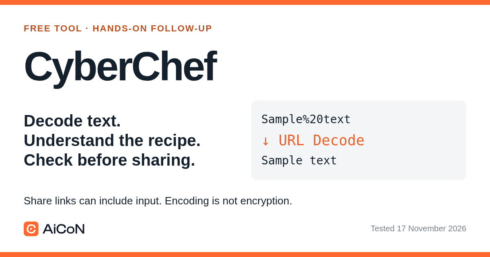
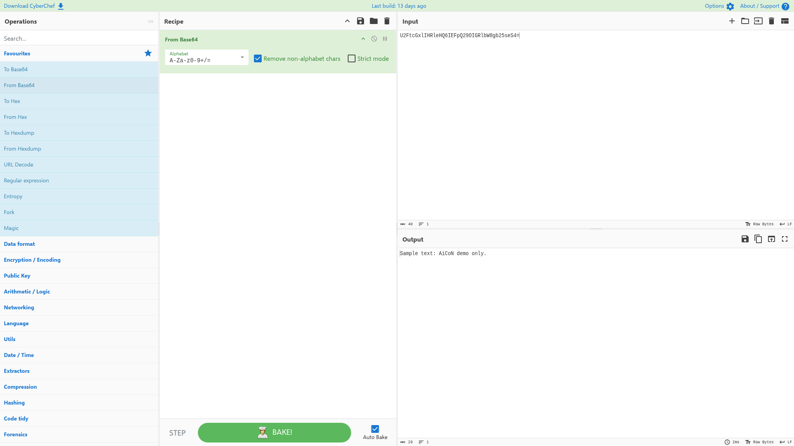
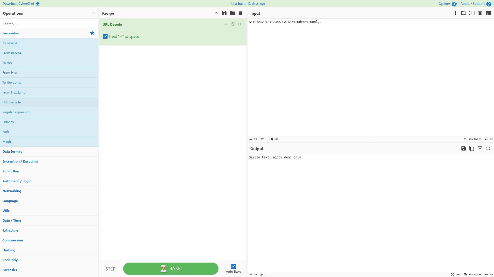

CyberChef: decode copied text without sending it to a chatbot
Copied text full of %20 and %3A? A Base64 string you need to inspect? CyberChef lets you apply a named operation and see the result in your browser. You can combine operations into a reusable "recipe" instead of pasting work data into an AI chat.

Base64 and URL encoding are ways of representing data, not ways to keep it secret. Decoding a string does not prove it is safe, trustworthy or lawful to use. Do not open a decoded link, run code or follow instructions just because CyberChef made the text readable.
What is it, and what is free?
CyberChef is an open-source browser app released by GCHQ under Apache License 2.0. It has operations for text formats, encoding, dates, compression, hashes and other data analysis. You put operations in the Recipe pane, supply Input, and inspect Output. We used the official hosted app without creating an account, entering a card or using a paid API.
It is not a chatbot and does not need an AI prompt for these tasks. The two examples below use named deterministic operations, not a model's guess. They do not establish that every CyberChef operation is error-free.
Two examples we actually tested
1. Decode Base64 text
Drag From Base64 from Operations into Recipe. Paste this synthetic sample into Input:
U2FtcGxlIHRleHQ6IEFpQ29OIGRlbW8gb25seS4=
With Auto Bake enabled, our output was:
Sample text: AiCoN demo only.
Use From Base64 to decode, not To Base64, which creates an encoded string.
2. Make percent-encoded text readable
Clear the first recipe. Drag URL Decode into Recipe and use this sample:
Sample%20text%3A%20AiCoN%20demo%20only.
The result was the same readable sentence:
Sample text: AiCoN demo only.
The operation has a "Treat + as space" option. Whether that is appropriate depends on the data format; do not blindly apply it to every URL component.
Both were tested in the live official browser app on 17 November. Only synthetic text was entered. We did not use private files, logins, API keys, production data or encrypted personal documents, and we did not test all operations or maximum file sizes.
How to build a useful recipe
- Open the official app and find the operation you actually need using the Operations search.
- Drag the operation into Recipe. A single click did not add it during our test; dragging did.
- Paste a small, non-sensitive sample into Input. Check the operation's arguments. With Auto Bake on, the output updates; otherwise use Bake.
- Inspect the result against something you can verify. Add another operation only when you understand the next transformation. Order matters.
- Copy or save the output when satisfied. Keep the original so you can compare and undo your own workflow.
Other useful starting points include changing text case, inspecting a hexdump, formatting supported data, or calculating a checksum. Choose the exact operation for your format; this article's hands-on verification covers only the two examples above.
Local processing does not mean every action stays offline
The project's current interface documentation says the unmodified app processes Input and Recipe in the browser, without a server-side processing component. The official app still has to load its code from the website unless you use a downloaded copy.
- Show on map downloads map tiles from Wikimedia.
- DNS over HTTPS resolves requests through Google or Cloudflare services.
- HTTP request contacts the URL configured for that operation.
Those operations are different from the local text examples here. Treat network destinations and anything you send to them as a separate disclosure decision. We did not test those operations or conduct a network/security audit.
The share-link trap: your input can be in the URL
During our test, the address changed to include an input= value in the URL fragment after #. The app has an option to update the URL when Input or Recipe changes, and recipe-sharing controls can include input.
A URL fragment is not normally sent as part of the HTTP request to fetch the page, but that does not make it a safe place for secrets. A copied link, screenshot, shared browser history or a tool that can read the address may expose it. Encoding the input inside the address does not encrypt it.
- Do not paste passwords, private keys, session cookies, recovery codes or confidential customer data into a casual browser demo.
- Before sharing a recipe, remove real input and use synthetic sample text. Read the complete URL and sharing options first.
- For sensitive organisational work, use approved software and your organisation's policy. A downloaded app is not a substitute for a security review.
Offline use and file-size limits
The official app offers a Download CyberChef option for a standalone copy. Its documentation says the downloaded, unmodified app can run locally or be hosted on a web server. We verified that the download option is present, but did not download or test a standalone build in this check.
The project's FAQ gives a rough file-handling ceiling of around 2 GB, depending on the browser, and warns that some operations can take a long time. That is not a promise your phone can process a 2 GB file. Start small; available memory, operation choice and browser limits matter. The multi-pane interface is easier to use on a desktop.
Live test evidence


Open it and check the sources
- Official app and built-in FAQ: interface, download option and approximate file limit.
- Official source repository: project scope and licence.
- Official interface source: local-processing explanation, the three external-service exceptions and URL-sharing settings.
- MDN: how URL fragments work.
- Apache License 2.0.
- UK Government case study: project origin and open-source background, not current usage statistics.
Guide by AiCoN. Independent hands-on examples, not a government endorsement, cryptographic audit or guarantee. Checked 17 November 2026.